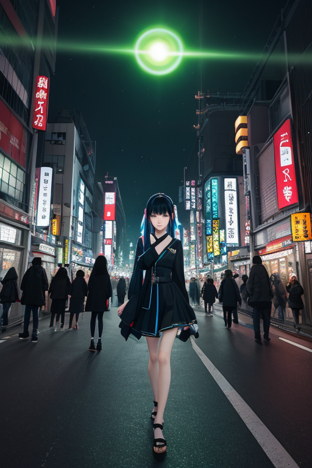
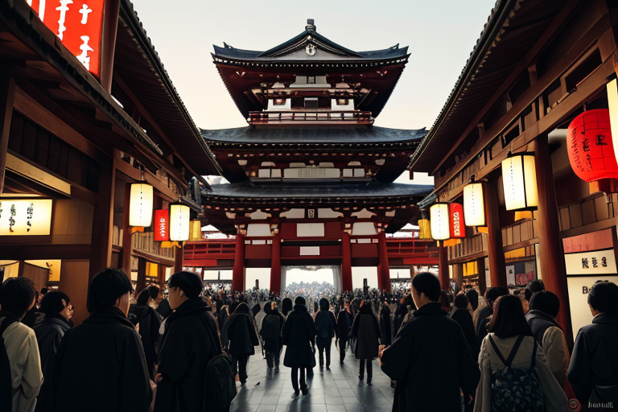
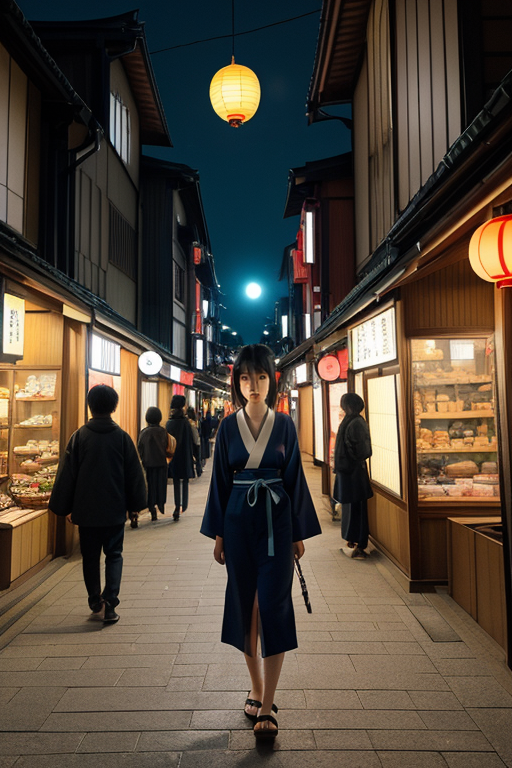

第一章 現実の東京
あなたはまだ気づいていない。この土地にも、王がいることを。
東京湾の波は、ゆっくりと岸壁を洗う。羽田の滑走路から離陸する機体の轟音が、水平線を震わせる。ここは、海と陸、内と外の境界。加速王トキオニア・アークスは、埋立地の端に立って、その全ての動きを視ていた。貨物船の汽笛、コンテナクレーンの旋回、通勤電車の正確なダイヤ。すべてが計算された速度で回転する巨大な装置。彼はその速度を微調整する。風向きを0.5度変え、信号の切り替わりを0.3秒早め、ひとつの遅延が連鎖する災厄を、かすかな「ずれ」で解消する。
彼の目には、この街の「速さ」が、無数の光の線として映る。それは進化の証でもあり、確実に何かを削り取っていく消耗の痕跡でもあった。焦燥が彼の核を締め付ける。もっと速く、もっと正確に。歪みはここから生まれる。境界は常に危うい。

第二章 歪みの兆候
浅草寺の仲見世は、観光客の波が絶え間なく押し寄せていた。トキオニア・アークスは、その雑踏の奥、雷門の巨大な提灯の陰に立っていた。彼の目には、人々の動きが、加速しすぎて末端がほつれ始めた光の糸のように映る。欲望がこの街を駆動し、その速度そのものが新たな歪みを生んでいた。
「王、外部からの『圧』が増しています」
アークレアが、せわしなく彼の肩の上で光を点滅させた。首都という境界は、常に内外からの力がぶつかり合う場所だ。満員電車のドアが閉まる0.1秒前、無理に飛び乗ろうとする人の影。その一瞬の選択の連鎖が、プラットホームの軋みを深める。
彼は目を閉じ、地層に刻まれた古い傷跡に意識を向けた。関東大震災の、東京大空襲の。再生と加速を繰り返してきたこの土地の記憶が、今、過剰な速さによって再び呻き始めている。彼は指をわずかに動かした。渋谷のスクランブル交差点で、歩行者信号の青が、ごく僅かに、ほんの0.5秒だけ長く点灯した。
進化か、消耗か。加速は両刃の剣であった。

第三章 王の葛藤
浅草寺の雷門に、巨大な提灯が揺れる。その下を、観光客の波が絶え間なく流れていく。トキオニア・アークスは、仲見世の喧噪の奥で、静かに手のひらを開いた。掌の上で、黒と金と赤の三重円が微かに回転し、加速していた。この街の欲望、焦燥、切なる上昇志向──それらすべてが彼の力の源であり、同時に重い枷でもあった。
「王よ、また調整を」
妖精クロノアークが、時計の針のような細い指を差し出した。指先には、秋葉原の電気街で、新製品の購入を待つ若者の群れの「待ち時間」が、細い光の糸として絡みついている。それを少しだけ縮め、消費の速度を上げるのが彼の役目だ。彼はためらった。速さは確かに進化をもたらす。この街の復興も、発展も、速さの賜物だ。しかし、その代償として何が削られていくのか。
彼は明治神宮の森を思い浮かべた。あの深い静寂は、この街の加速が生み出した「空白」の反対側にある。すべてを加速させることが、果たして守ることなのか。彼の内側で、初めて「疑問」という感情が、冷たい楔のように突き刺さった。
第四章 妖精との対話
浅草寺の仲見世通り。人波は絶え間なく流れ、観光客の笑い声が交錯する。その喧噪の真ん中で、アークレアは静かに言った。
「王よ、あなたは『出会い』を加速させすぎています」
彼女の目は、通りすがりの人々の一瞬のすれ違いを見つめていた。
「出会いの速度を上げれば、別れの速度も上がります。接触の頻度は、摩擦の熱量を増やすだけ。この街の感情密度は、すでに限界に近い。あなたが『効率』を求めるほど、人々の心は消耗していく」
トキオニア・アークスは、スクランブル交差点で何千もの人生が一瞬で交差し、また離れていく光景を思い浮かべた。彼はそれを「可能性の交差点」と呼んでいた。しかし、妖精は言う。それは「無数の小さな別れの連続」だと。
「進化とは、時に『待つ』ことです。時間を圧縮することだけが、前進ではない」
彼女の言葉は、彼の内側に刺さった疑問の楔を、さらに深く打ち込んだ。

第五章「微調整と余韻」
浅草寺の仲見世通りは、夕暮れの柔らかな光に包まれていた。トキオニア・アークスは人混みの端に立ち、流れを観察していた。彼は、ある老夫婦が押し寄せる人波に飲まれそうになるのを見た。無意識に指を動かし、周囲の人の歩調をほんの一瞬、百分の一秒だけ遅らせた。ほんのわずかな隙間が生まれ、老夫婦はゆっくりと通り過ぎていった。かつてなら、この「非効率」な介入に焦燥を覚えただろう。今、彼はただ、二人の背中が仲良く並んで遠ざかるのを、静かに見送っていた。
効率と速度が全てのこの街で、彼は学び始めていた。進化とは、時に加速ではなく、ほんの少しの「間」を創り出すことなのかもしれない。消耗を強いる速度ではなく、人と人とがすれ違い、時に触れ合うための「余白」を調整すること。関東大震災も、大空襲も、この街は全てを「速やかに」処理し、上書きしてきた。だが、その速度の裏側で、失われ、置き去りにされるものがある。
彼は明治神宮の森へ向かった。都会の喧騒が、深い木立によって濾過され、静寂に変わる境界線。ここでは、時間の流れそのものが異なった。彼は、加速の王としての力を、森の呼吸に合わせて微調整した。ネオンの瞬きと満員電車のリズムを背負いながら、彼は今、この静けさを守るための、ほんの小さな「歪み」を整えている。
速さは進化か、消耗か。答えは出ていない。ただ、この街の欲望と哀歓を一身に受け止める王は、問いそのものと共に、ここに立ち続けるのだろう。
あなたの町にも、王がいる。